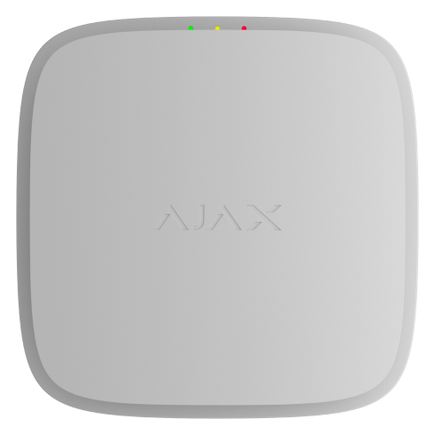

FireProtect 2 RB (CO) UL Jeweller
Détecteurs d'incendie
Réf. fabricant FP2.RBC.J-000-NA.UL · Ajax Systems, marque partenaire
Sur devisÉtude, fourniture et installation par Active Sécurité 974
Détecteur d'incendie sans fil avec capteur de CO
- Version avec batteries remplaçables
Cette référence n’est pas proposée sur le site Ajax France à ce jour. Sa disponibilité à La Réunion sera confirmée lors de l’étude de votre devis.
- Étude et devis gratuits, sans engagement
- Installation chez vous, partout à La Réunion
- Partenaire agréé Ajax Systems
Caractéristiques
En bref.
Données issues de la fiche officielle du fabricant, reformulées. Fiche constructeur (nouvel onglet)
| Modèle | FireProtect 2 RB (CO) UL Jeweller |
|---|---|
| Référence fabricant | FP2.RBC.J-000-NA.UL |
| Gamme | Residence Line |
| Type | Détecteurs d'incendie |
| Points clés |
|
| Coloris officiels | Noir, Blanc |
| Prix | Sur devis |
| Disponibilité | Disponibilité à confirmer |
Dans la même famille
Autres produits.


